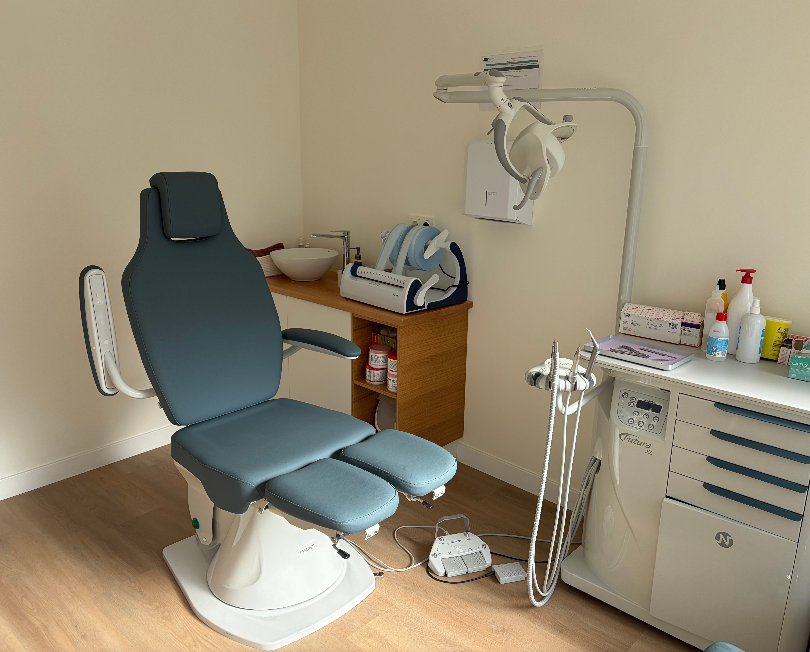
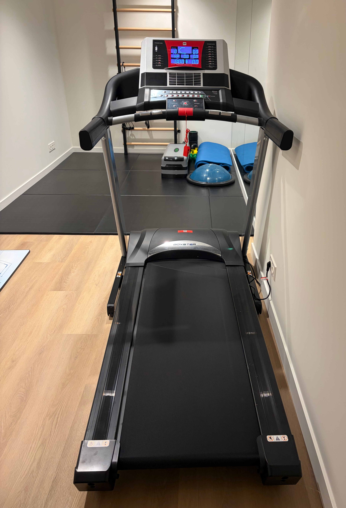
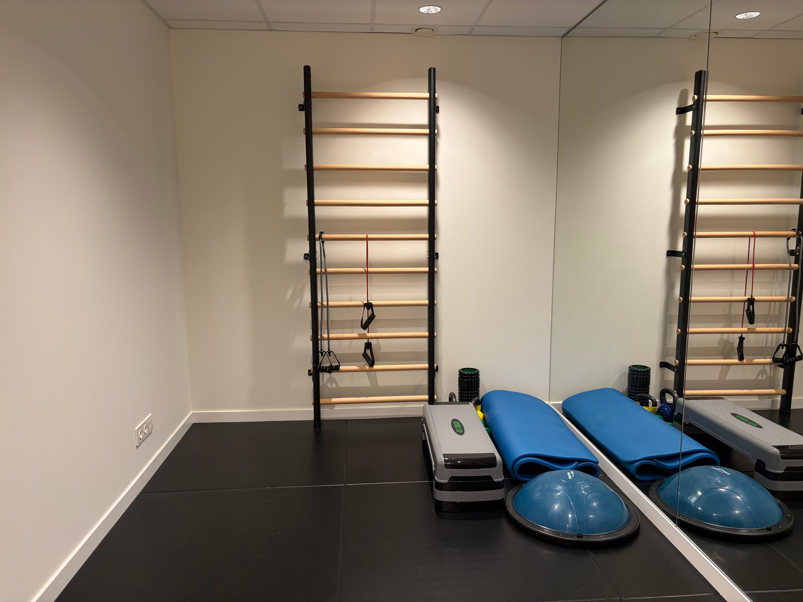

Prevención, diagnóstico y tratamiento adaptados a las necesidades específicas de tus pies para mejorar tu salud física y calidad de vida.
Espacios modernos y equipados para ofrecerte la máxima calidad asistencial.

Gabinete clínico de podología

Zona de análisis de la marcha

Espacio de readaptación y ejercicio
Tratamientos especializados e integrales para la salud de tus pies.
Tratamiento podológico para prevenir, diagnosticar y tratar las afecciones más habituales en la piel y las uñas de los pies.
Tratamiento especializado para aliviar el dolor, curar la infección y prevenir que la uña vuelva a clavarse.
Tratamientos efectivos adaptados a cada paciente para eliminar el virus de la verruga plantar de forma segura.
Analizamos de forma personalizada cómo apoyas los pies, caminas y corres para detectar posibles alteraciones biomecánicas.
Prevención, valoración y tratamiento de las alteraciones del pie durante la infancia, acompañando su desarrollo saludable.
Cuidado podológico y prevención fundamental mediante revisiones periódicas para detectar alteraciones de forma temprana.
Terapia localizada para reducir la inflamación y aliviar el dolor en patologías articulares o musculares del pie.
Soluciones quirúrgicas para resolver de forma definitiva afecciones y molestias dolorosas crónicas con rápida recuperación.